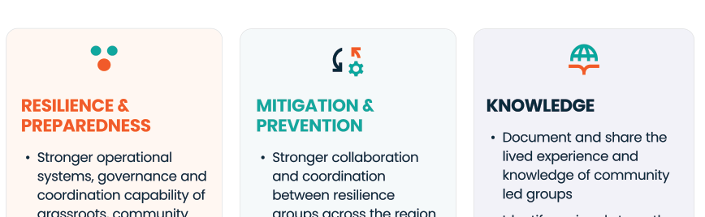

Notes on the experience the client asked for, checked against WCAG 2.2 level AA. Each card shows the combination, its measured contrast ratio and what the Round 2 builds do instead. Ratios use the WCAG formula: 4.5:1 for normal text, 3:1 for large text (24px, or bold from about 19px) and for icons and focus rings.
The feedback asks for the hero and footer blocks in brand green. White text on that green (#00a79d) is below the minimum.
We believe when climate disasters hit
2.99:1 fails AA (needs 4.5:1).
We believe when climate disasters hit
5.05:1 passes AA (needs 4.5:1).
What the Round 2 builds do: Uses navy text on the green hero and footer (5.05:1). If white text on green is a must, the green has to be the darker #00615a, which is not a brand colour.
2White text on the Connect, Share, Care band
The three project one-pagers put white text on teal, yellow and orange. White on teal and on yellow fails even as large text, and white on yellow is almost unreadable. White on orange only scrapes through because the words are large.
Connect
2.99:1 fails AA (large text, needs 3:1).
Share
1.52:1 fails AA (large text, needs 3:1).
Care
3.39:1 passes AA (large text, needs 3:1).
What the Round 2 builds do: The band uses navy words, bold and large. Navy on orange is 4.46:1, which is under 4.5:1, so it only passes as large text. Body copy on solid orange is set bold and at least 19px to qualify, or sits on a white or tinted panel.
3Brand orange and teal as heading colours
The one-pagers colour headings in bright orange on peach and teal on mint. Teal on mint fails even as large text. Orange on peach scrapes through at about 3.1:1 only because the headings are large, so any smaller use fails.

RESILIENCE & PREPAREDNESS
3.10:1 passes AA (large text, needs 3:1).
MITIGATION & PREVENTION
2.81:1 fails AA (large text, needs 3:1).
What the Round 2 builds do: Strong brand colour is used as a highlight behind navy text (marker bars and pill labels), not as the text colour. Where a coloured heading is wanted, the dark versions work: #b93a0c on white is 5.7:1 and #00615a on white is 7.3:1.
4Connect. Share. Care. in the tagline colours
The sampled tagline colours are all well under the minimum on white. Logotypes are exempt from the rule, but the client has said this is not a tagline, so the words behave as ordinary text.
Connect.
2.55:1 fails AA (large text, needs 3:1).
Share.
2.06:1 fails AA (large text, needs 3:1).
Care.
2.97:1 fails AA (large text, needs 3:1).
What the Round 2 builds do: The tagline is removed from the footer. The words appear only in the navy-on-colour band.
5Highlights and white text do not mix
A marker highlight is safe behind navy text. If someone later sets that title in white, the half of the word over the bar fails.
Our Focus
9.95:1 passes AA (large text, needs 3:1).
How we work
5.05:1 passes AA (large text, needs 3:1).
What people say
4.46:1 passes AA (large text, needs 3:1).
Our Focus
1.52:1 fails AA (large text, needs 3:1).
What the Round 2 builds do: Highlights are only used on light backgrounds with navy text. On navy sections the title is plain white with no bar.
6Focus ring on brand green
The site uses a dark orange focus ring. On the green hero panel and footer that ring is almost invisible, which fails the 3:1 rule for focus indicators.
Focus ring colour
1.91:1 fails AA (large text, needs 3:1). Needs 3:1 against the green.
Focus ring colour
5.05:1 passes AA (large text, needs 3:1). Navy ring used on green.
What the Round 2 builds do: The green hero panel, the Visit the Network band and the footer switch to a navy focus ring.
7Yellow and orange icons on pale tints
Meaningful icons need 3:1 against their background. The Round 1 yellow and grey pillar icons on cream and grey are under that.
Yellow icon on cream
1.39:1 fails AA (large text, needs 3:1).
Grey icon on grey
1.97:1 fails AA (large text, needs 3:1).
What the Round 2 builds do: The feedback removes the symbols from How we work and Our Focus, so this is settled. The few icons that remain (the part-of-it steps in Recommended) are navy.
8Scrolling ticker
Moving text that starts by itself and lasts more than five seconds needs a way to pause it (WCAG 2.2.2). Round 1 Prototype 1 has the ticker with no control.
The Round 1 ticker above the footer has no pause control.
What the Round 2 builds do: The Client request build has no ticker. The Recommended build keeps one, with a Pause button and no motion for people who ask their device for less. Round 1 Prototype 1 should be fixed the same way if it is used.
9Videos need captions, a transcript and audio description
The sizzle reel and the group story videos cannot be checked from here. AA needs captions (1.2.2) and audio description or a text alternative (1.2.5) for recorded video.
Placeholder videos only. The play buttons open the Vimeo sizzle reel full screen.
What the Round 2 builds do: Ask for captioned files, or turn captions on in Vimeo, and put a transcript link under each video. The play button has a text label, and Escape closes the player.
10Maps and logos
The Google Map embed cannot be explored by keyboard or screen reader. Funder and partner logos are exempt from the contrast rule but still need alt text. The Federal and State Government logos are not supplied yet.
Map plus list on the Network page. Logos have alt text. Government logos are marked "logo to be added".
What the Round 2 builds do: The group list and its filters sit next to the map, so the information is not map-only. Add the government logos once the protocol files arrive.
11Wix Classic build risks
Wix Classic positions elements by pixel, so these cannot be proved in a prototype: text boxes that overlap when text is enlarged or spacing is changed (1.4.4, 1.4.12), a reading order that follows the visual order (1.3.2), and a separate mobile layout (1.4.10).
Build checks, not visual fails.
What the Round 2 builds do: Use strips and boxes that grow with their text instead of fixed-height text boxes, reorder the tab order in the editor, and check the mobile editor at 320px and with browser zoom at 200%.
Combinations that pass
Safe pairs from the brand palette, used across both builds.
AaBody text on white15.11:1
AaText on teal tint11.53:1
AaText on yellow tint12.67:1
AaText on orange tint11.20:1
AaWhite on navy15.11:1
AaYellow on navy9.95:1
AaNavy on brand green5.05:1
AaNavy on brand yellow9.95:1
AaDark teal links on white7.35:1
AaDark orange on white5.72:1
Still open
Real text and colour contrast should be re-checked in Wix once built. Wix does not check it for you.
The Federal and State Government logos, and the logo protocols, are still to come.
Group story and sizzle reel videos need captions, a transcript and audio description.
The Round 1 and Round 2 pages use sample groups and placeholder impact highlights.